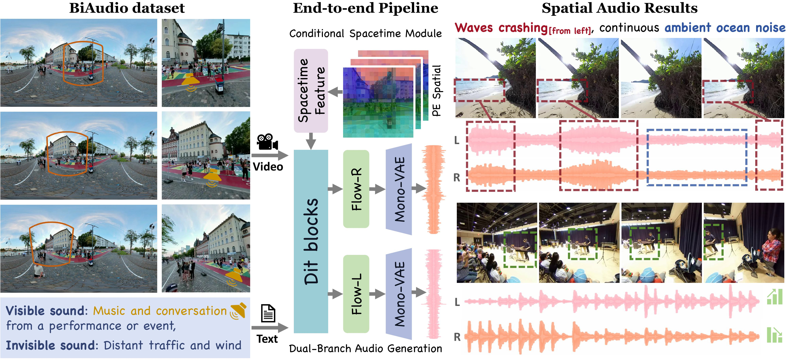
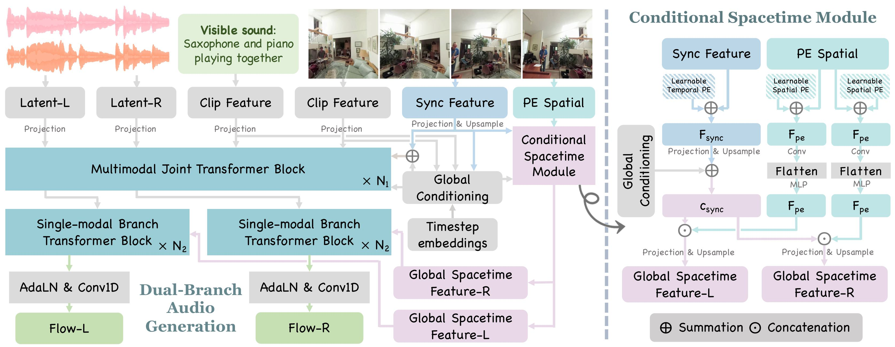

Despite progress in video-to-audio generation, the field focuses predominantly on mono output, lacking spatial immersion. Existing binaural approaches remain constrained by a two-stage pipeline that first generates mono audio and then performs spatialization, often resulting in error accumulation and spatio-temporal inconsistencies. To address this limitation, we introduce the task of end-to-end binaural spatial audio generation directly from silent video. To support this task, we present the BiAudio dataset, comprising approximately 97K video-binaural audio pairs spanning diverse real-world scenes and camera rotation trajectories, constructed through a semi-automated pipeline. Furthermore, we propose ViSAudio, an end-to-end framework that employs conditional flow matching with a dual-branch audio generation architecture, where two dedicated branches model the audio latent flows. Integrated with a conditional spacetime module, it balances consistency between channels while preserving distinctive spatial characteristics, ensuring precise spatio-temporal alignment between audio and the input video. Comprehensive experiments demonstrate that ViSAudio outperforms existing state-of-the-art methods across both objective metrics and subjective evaluations, generating high-quality binaural audio with spatial immersion that adapts effectively to viewpoint changes, sound-source motion, and diverse acoustic environments.

Overview. Left: The BiAudio dataset converts 360° videos and FOA audio into perspective video and binaural audio pairs, employing diverse camera rotations to enhance spatial cues. Middle: Our end-to-end pipeline employs conditional flow matching with a dual-branch generation architecture, integrated with a conditional spacetime module to generate spatially immersive binaural audio from multimodal inputs. Right: Example results generated by ViSAudio. As shown above, our model faithfully generates the visible sound of waves crashing, highlighted with red boxes in both the video frames and the audio waveform, with the left channel louder since the sound event occurs on the left. It also captures subtle environmental sounds like ocean noise, highlighted with blue boxes, demonstrating its ability to reproduce fine-grained background acoustics. As shown below, as the camera rotates right, the marimba sound moves left, increasing left-channel amplitude while decreasing the right, demonstrating dynamic adaptation to viewpoint changes.
| Dataset | Statistic | Data Type | Caption | Camera Viewpoint | |||||
|---|---|---|---|---|---|---|---|---|---|
| #Clips | Duration | Video Type | Open Domain | Real-world | FOA | Visible | Invisible | ||
| OAP | 64k | 26h | 360° | Street | Fixed | ||||
| Fair-Play | 1.9k | 5.2h | FoV | Music | Fixed | ||||
| SimBinaural | 22k | 116.1h | FoV | Music | Fixed | ||||
| MUSIC-21 | 1.7k | 81h | FoV | Music | Fixed | ||||
| YouTube-Binaural | 0.4k | 27h | FoV | Fixed | |||||
| BiAudio (Ours) | 97k | 215h | FoV | Moving | |||||
BiAudio Statistics. Comparison between BiAudio and existing binaural audio-video datasets. FoV and 360° denote Field-of-View and panoramic videos, respectively, while FOA stands for First-order Ambisonics. BiAudio is currently the largest video-binaural audio dataset, featuring open-domain sounds from diverse real-world environments and varied camera rotation trajectories, enabling audio generation beyond fixed viewpoints. Rich captions allow modeling of subtle environmental sounds, producing more realistic audio.

ViSAudio Network Architecture. Left: We adopt Dual-Branch Audio Generation, where two dedicated branches independently predict the left and right audio flows. Right: A Conditional Spacetime Module extracts spatiotemporal cues from the video and injects them into the generation process, improving spatio-temporal alignment between audio and video.
Additional Results. Supplementary videos demonstrate binaural spatial audio across diverse acoustic environments, generated from input videos and optional text prompts. These audiovisual samples highlight the model’s ability to create realistic and spatially accurate sound. 🎧 For the best experience, please wear headphones and increase the volume. 🎧